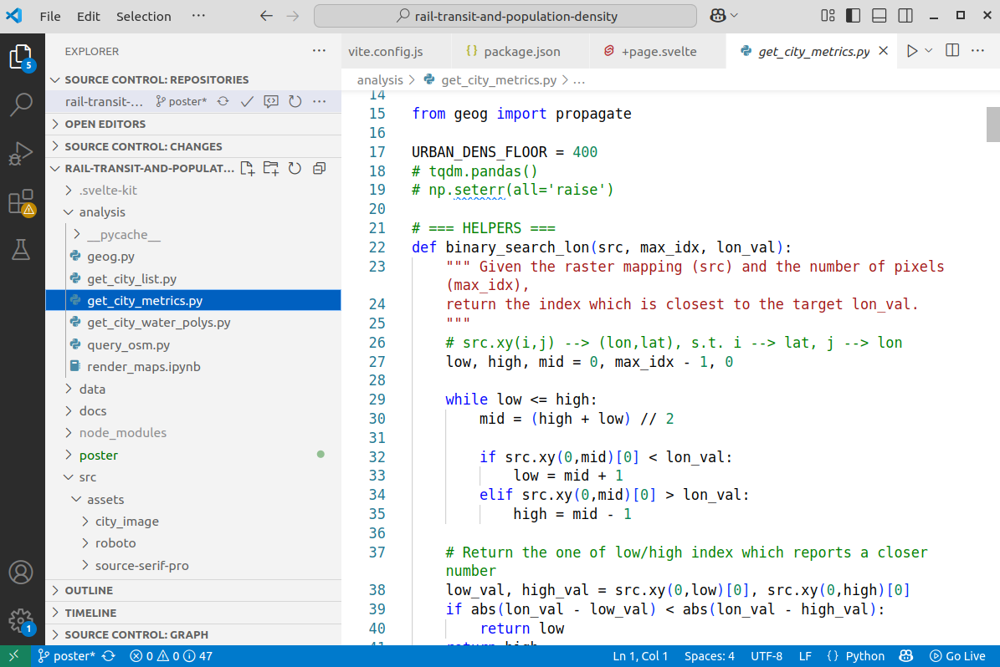
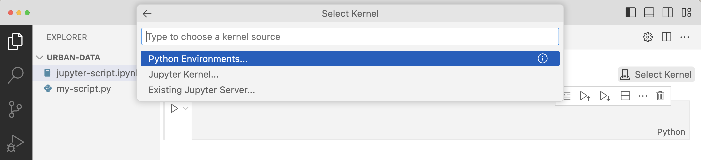
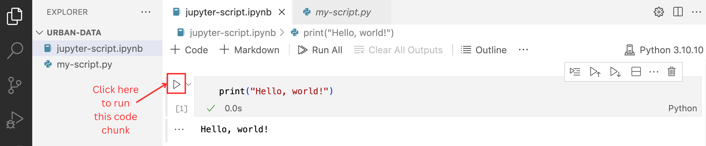

# Assign a value to a variable
city = "Toronto"
population = 100Programming with Python and computational notebooks
This notebook introduces the Python programming language, Visual Studio Code (“VS Code”), and Jupyter Notebooks. It will cover:
- A brief overview of programming, Python, integrated development environments (IDEs), and computational notebooks
- How to run a Python (
.py) script in the terminal - How to download VS Code and the Python and Jupyter Notebook extensions
- How to run code using Jupyter Notebook (
.ipynb) in VS Code - The basics of coding in Python, including:
- Variables
- Simple math
- Lists and dictionaries
- If statements
- For and while loops
- Functions
Glossary
The glossary below lists key terms related to programming and Python as well as their simple definitions. We’ll go into detail about each one later in this section, but feel free to refer to this table whenever you need a quick reminder of what any of these terms mean.
| Term | Definition/Example |
|---|---|
| Coding/programming | The act of giving a computer written instructions for a task or set of tasks using a “language” like Python, R, Javascript, SQL, etc. |
| Python | A widely used programming language |
| Script | Plain text file with code (a Python script has the .py file extension) |
| Terminal | Application for using the command line |
| Command line | Interface for inputting commands to computer |
| Integrated development environment (IDE) | An environment to write code in (also known as a “code editor”) |
| Visual Studio Code | Popular code editor (IDE) |
| Computational notebook | Coding environment (e.g., Jupyter Notebook) that includes code, explanations, and outputs all in one place |
| Jupyter Notebook | Popular computational notebook application |
| Comment | Written explanation of code that is not implemented (in Python, lines that start with #) |
| Variable | Labeled entity that stores information (e.g., numbers or text) |
| List | Collection of elements which can be accessed by their position |
| Dictionary | Object that stores information in “key”/“value” pairs |
| If statement | Code that uses conditional logic |
| For loop | Code that repeats for each item in a list or range |
| While loop | Code that repeats as long as a condition is true |
| Function | Reusable block of code that performs a task |
| Library | Collection of related functions that can be imported in your code |
What is coding/programming?
Computers operate using code, which is defined in Wikipedia as “a sequence or set of instructions in a programming language” that tells the computer what to do and how to do it. Coding, or computer programming, is the act of creating those written instructions.
However, as you might imagine, computers and humans speak different languages. Computers operate using a specific type of code called machine code or machine language. You might recognize a basic form of machine code, binary notation, which is made up of 0s and 1s.
Since most people don’t speak fluent computer, we often rely on high-level programming languages like Python, R, and JavaScript to write our computer code. You can think of these programming languages as similar to languages that people speak and write, like Spanish or Arabic. Each language has its own set of rules and different syntax, but (most) ideas can be translated from one language to another. Instead of using language to communicate with other people, you write code to give directions to a computer. In data analysis, these directions could be to summarize data in a table, create a chart or a map, or generate a statistical model, for example.
With any (written) language, you also need to select a platform/interface/tool to write on—for example, a Word Document or a piece of paper. Each of these different tools has a slightly different interface and convention. In coding, these tools are called environments, which we will discuss later in this chapter.
Why learn programming?
Spreadsheet software, like Excel, Google Sheets, and LibreOffice calc, can be great for viewing and exploring data and performing simple analyses. However, they struggle with large datasets, lack robust tools for cleaning and transforming complex data, have very limited options for spatial/geographic data, and make reproducibility nearly impossible. Plus, it’s easy to introduce silent errors with formulas or copy-pasting. For anything beyond basic summaries or charts, scripting languages like Python are far more powerful, reliable, and scalable.
If you are not interested in learning Python, however, many of the other notebooks in this online textbook that show Python examples also include links to equivalent examples in QGIS or Excel.
Why learn Python?
Python is a widely used programming language, especially in urban and spatial analysis, because it’s easy to learn relative to other languages and has a strong ecosystem of libraries for working with data, maps, and models. Plus, it’s open source and has a huge community of people that use and develop it, which means lots of learning resources and support. While we’ll mostly be exploring Python, the same concepts are applicable across many other languages and software.
Download Python
Before you can run any Python code, download the most recent version of Python from this link if you haven’t already. Make sure to choose the correct version for your computer (Windows vs. macOS), and follow the instructions to complete the download.

If you get stuck at any point while downloading software, using the terminal, or writing code, read these tips for getting help.
How do I run Python code using the terminal?
Python lets you write instructions in a plain text file, often called a script, which the Python interpreter on your computer reads and runs line by line. You don’t need to “compile” your code like in some other languages—you can just write it, save it as a .py file, and run it directly using the command line in your terminal. The terminal is an application that provides access to the command line, which is the space where you type instructions for your computer to execute. However, the terms “command line” and “terminal” are often used interchangeably, and are also called the shell, console, prompt, or various other names.
You can use the terminal/command line to do things like run programs and manipulate files and folders stored on your computer. The command line has its own language and syntax, kind of like how Python is its own language, and some of the commands are slightly different for different operating systems. In other words, they might change depending on whether you have a Mac or a Windows computer. See a list of Windows commands here and Mac commands here.
1. Write a .py script
Start by creating a file on your computer called my-script.py, a very simple script which simply prints “Hello, world!”. You can do this by (1) opening a basic text editor (e.g., TextEdit on macOS or Notepad on Windows), (2) writing (only) the following code…
print("Hello, world!")…and (3) saving the file as my-script.py in a directory (another word for “folder”) that you’ll remember.
It might make sense to create a new folder on your computer for the work you do in this workshop so that it’s all in one place. Make sure to use that file extension instead of saving it as a .txt text file.
If possible, make sure the full “file path”—the sequence of characters that specifies where on your computer a file is located—does not have any spaces or weird characters in it, as this can cause issues later on. For example, instead of creating a folder called urban data, create a folder called urban-data so that the full file path is /Users/jpg23/urban-data/my-script.py instead of /Users/jpg23/urban data/my-script.py.
If you’re not sure how to get the file path of your .py script, see these helpful links for Mac and Windows computers. Note that the format of a file path might look different on different computers.
2. Open the terminal
To open the terminal on a Mac, follow these instructions. To open the terminal on a Windows computer, follow these instructions.
This link explains how to run a Python script in the terminal. If you’re still having trouble, Google your questions (or use ChatGPT!) to troubleshoot.
2. Navigate to the folder where you saved your .py file
Now use the terminal to navigate to the folder where you saved the my-script.py file using the cd command, which changes the directory. For example, if you saved the file in a folder called urban-data, and the full file path to your .py file is /Users/jpg23/urban-data/my-script.py (to get the file path, see again these helpful links for Mac and Windows), you’d want to type cd /Users/jpg23/urban-data in the terminal and hit enter. This will bring you to the folder that your .py file is saved in.

cd commandNext, to see what files are located in this directory, use the ls command for Mac (or dir for Windows).
ls commandGood—the my-script.py is indeed in the urban-data folder.
3. Run your script
Once you know you’re in the right folder, type the following: python my-script.py and then hit enter. This should result in the computer printing out Hello, world! on the next line, like below:
If you’re having trouble getting this output, first try typing py my-script.py or python3 my-script.py instead. If it’s still not working, Google your questions or explain your problem to a chatbot like ChatGPT and ask it to walk you through the steps. Chatbots are very good at solving these kinds of problems, but remember to always make sure you understand what they’re telling you.
The Python code we just ran, despite all the steps it took, is very simple. Usually, you’ll want your code to do more than just print out a statement. However, if you’re running .py scripts in the terminal, it can be hard to see what your code is doing. For example, you won’t be able to see a plot that you create in Python using just the command line.
In the following section, we’ll explain how you can use other tools and applications to code in a more interactive way.
How else can I run Python code?
Tools for writing code
When you write something in English or another language, you need to choose an “environment” (i.e., platform/interface/application) to write in. For example, if you’re writing an email, you might use Gmail or Outlook. If you’re writing a report, you might use Google Docs or Microsoft Word. Or maybe you prefer writing on parchment with a quill pen!
When coding, you also have to choose an environment to write in. This is typically called a “code editor” or integrated development environment (IDE). The simplest editor would simply be the notepad or text editor on your computer. But there are many IDEs to choose from that make coding much easier. Some of the most popular ones for Python are Visual Studio Code (“VS Code”) and PyCharm.
A main benefit for using a code editor is that it highlights different parts of your code in different colours or styles, making it much easier to read.

Computational notebooks
There are many different ways to execute code, or tell the computer to perform the instructions you’ve written. If you write your code in a file that’s saved with the .py file extension, you can run it all at once, and the computer will follow all of your instructions, one line at a time. This works well for scripts that are complete and do not need to be run in separate chunks.
If you are exploring, analyzing, or visualizing data, it is sometimes easier to work in a computational notebook. Computational notebooks are coding environments that not only allow you to write code, but also let you write explanations and show the outputs of your analysis, very similar to pre-digital formats.

Jupyter Notebooks (named after Galileo’s work!) are often used for data analysis in Python. When using a Jupyter Notebook, you can run code chunk-by-chunk and see the output right below each chunk. For example, you can write a chunk of code that manipulates a dataframe and then look at the first few rows of the dataframe right below the code. The page you are reading now was written in a Jupyter notebook! :)
While you can choose to work with code editors like Sublime Text or notebooks via Jupyter Lab (a web-based environment for Jupyter Notebooks), we recommend using Jupyter Notebooks in VS Code via the Jupyter Notebook “extension”. In other words, you’re using a Jupyter Notebook format (which has the .ipynb file extension, just like how basic Python scripts have the .py extension) in the VS Code IDE. We’ll discuss this in the next sections.
VS Code + Python
Let’s start by running your simple .py file in VS Code, just to show you how that works, and then afterwards we’ll move on to using a Jupyter Notebook instead.
First download the appropriate version of VS Code for your computer from this link. Once you’ve finished setting it up, open the desktop application and open a new folder by clicking on the “Explorer” tab at the top left, clicking “Open Folder”, and navigating to the directory that you want to work in. This essentially pins the folder you’re working in to the left of the screen so that you can easily access all the files within it.
For example, if you open the urban-data folder from earlier, you should see the my-script.py file within it.
.py file in VS CodeTo run this .py file directly in VS Code, first install the Python extension, which allows you to program in VS Code using the Python language, by clicking the Extensions icon on the left sidebar (it looks like four squares) and typing “Python” in the search bar. Click on the extension named “Python”:
Next, go back to your .py file by clicking on the Explorer icon on the top of the left sidebar (it looks like two pieces of paper) and clicking on my-script.py. Click the arrow button at the top right of the window and a terminal (just like the one you used before!) should show up with the result:
.py file in VS CodeVS Code + Python + Jupyter Notebook
To create a Jupyter Notebook, you’ll first need to install the Jupyter Python package. If you don’t already have a terminal open from the previous step, open a new terminal by clicking on “Terminal” (this should be at the top of your screen) -> “New Terminal”.
Next, type the following code into the terminal and hit enter: python -m pip install notebook. If this doesn’t work, try py -m pip install notebook or python3 -m pip install notebook.
This installs the backend tool so you can actually run Jupyter Notebooks.
Now click the Extensions icon on the left sidebar (it looks like four squares) and type “Jupyter” in the search bar. Click on the extension named “Jupyter” by Microsoft, and then click the “Install” button. This extension lets you run and work with .ipynb notebook files directly in VS Code.
Create a new Jupyter Notebook in your folder by clicking “File” (this should be at the top of your screen) -> “New File…” and selecting Jupyter Notebook. This will create a file with the .ipynb extension instead of the .py extension.
Next, select a Python environment to work in by clicking on the “Select Kernel” button at the top right, “Python Environments”, and then the version of Python that you’ve installed. This essentially tells VS Code which programming language (and which version of Python specifically) you want it to use to execute your code.

To write and run code in the notebook, use “cells” that contain chunks of information. For example, write the code from earlier (print("Hello, world!")) in the first cell, and then click the arrow to the left of the cell to run/execute it:

When you run an individual cell, you are telling the computer to follow the instructions you’ve provided in only that cell, ignoring any other cells that are in the notebook. Be careful of the order in which you “execute” the cells. For example, if you run cell B before running cell A, it doesn’t matter if cell B is located below cell A – the computer will still follow the instructions in B first and A second.
To create a new cell, click on the + Code button at the top left:
For more information about how to use Jupyter Notebook in VS Code (including useful keyboard shortcuts!), see this link.
Python basics
Now that you have Jupyter Notebook set up, let’s code! Below, we’ll cover some of the basic building blocks of Python.
Open up a fresh .ipynb file and you can get started writing bits of code for each of the topics below. We recommend creating a new cell for each new topic or task you’re trying to accomplish, but feel free to group the lines of code however it makes sense to you.
Variables
A variable is like a labeled entity that stores information (numbers, text, etc.). You can create a variable, give it a name, and assign it a value.
Note that in the below code, some of the lines are written with a # at the beginning - these are comments. Putting a # in front of a line of code tells the computer not to execute it. You should use comments often to explain what your code is doing, either for someone else who might need to understand it or for your future self.
In the above cell, we created two variables, one called city and another called population. The city variable is a string because it is a sequence of characters. The computer knows this is a string because we enclosed the text, Toronto, in quotes. Single or double quotes both work here.
The population variable is an integer because it is a numeric value without decimals. You can see the data type with type([name of object]) like below:
type(population)intIf we print the variable, it will show us the variable’s value:
print(population)100We can also re-assign variables, which will change their value. Now when we print the value of population, it will show 101 instead of 100:
# Re-assign `population` variable with a new value
population = 101
print(population)101Remember that the computer interprets your code in the order you run the cells, not in the order of the cells in the notebook. For example, if you ran the above cell that assigns a value of 101 to the population variable before running the cell that assigns the value of 100 to population, the computer would first store the value of 101 before re-assigning it the value of 100.
Simple math
Python can do simple math, like a calculator:
4 + 3710/33.3333333333333335You can also use the math module to access more advanced functions, like taking the square root. To use this module, you have to import it first:
import math # import module
math.sqrt(25)5.0Lists
A list is a collection of elements which can be accessed by their position. Python uses something called zero-based indexing, which means the first element of a sequence has an index (position) of 0 instead of 1.
In the below example, transport_modes is a variable whose type is a list.
# Assign list to variable called 'transport_modes'
transport_modes = ["train", "car", "bus"]
type(transport_modes)list# Access first item in list
print(transport_modes[0])train# Access second item in list
print(transport_modes[1])carItems can be appended to lists:
# Add "streetcar" to the list
transport_modes.append("streetcar")
print(transport_modes)['train', 'car', 'bus', 'streetcar']We can check the length of the new list to see how many elements it has:
len(transport_modes)4Learn more about lists here.
Dictionaries
A dictionary is a type of object that stores information in pairs: each “entry” in the dictionary has both a key and a value. In the example below, housing_unit is a dictionary that contains characteristics – specifically the address and age – of a housing unit.
housing_unit = {"address": "605 Main St", "age": 70}We can access the value associated with the address of the housing unit:
print(housing_unit["address"])605 Main StWe can also add a new key-value pair to the dictionary that represents, in this case, the housing unit type:
housing_unit["type"] = "condominium"
print(housing_unit){'address': '605 Main St', 'age': 70, 'type': 'condominium'}Learn more about dictionaries here.
If statements
If statements let your code make decisions. You check a condition (e.g., whether income < 30,000), and run different code depending on whether it’s true or false.
income = 50000
if income < 30000:
print("You're considered low-income.")
else:
print("You're not considered low-income.")You're not considered low-income.Learn more about if statements here.
For loops
A for loop repeats code for each item in a list or range. For example:
# Reminder of what items are in the 'transport_modes' list:
transport_modes['train', 'car', 'bus', 'streetcar']for transport_mode in transport_modes:
print(transport_mode)train
car
bus
streetcarLearn more about for loops here.
While loops
A while loop repeats code as long as a condition is true. In the below example, we start with 0 and keep adding 1 until we get to 3, after which we stop counting:
count = 0
while count <= 3:
print("Counting:", count)
count += 1Counting: 0
Counting: 1
Counting: 2
Counting: 3Learn more about while loops here.
Functions
A function is a reusable block of code that performs a task. You “define” it (write the code that performs the task) once and “call” it (run that pre-defined code) whenever you want. In the below example, we define the function zoning so that when it is called, it prints “This parcel is zoned as [land_use]!” where land_use is an argument (also known as a parameter) that’s passed into the function.
# Define the function
def zoning(land_use):
print(f"This parcel is zoned as {land_use}.")
# Call the function
zoning("commercial")This parcel is zoned as commercial.Not all functions need arguments. For example:
# Define the function
def largest_cities():
print("Toronto, Montreal, and Calgary are the largest cities in Canada by population.")
# Call the function
largest_cities()Toronto, Montreal, and Calgary are the largest cities in Canada by population.Some functions have more than one argument. For example:
# Define the function
def add_numbers(a, b):
c = a + b
print(c)
# Call the function
add_numbers(8, 7)15While all of the example functions listed above result in something being printed out, most functions do more than that. For example, a single function can filter a dataset based on a set of values, manipulate the resulting dataset, and create a plot.
Learn more about functions here.
Libraries
Libraries are collections of related functions that do things like analyze data, draw charts, or work with maps.
Many libraries like math for a variety of mathematical operations, os for interacting with files on your computer, and random for generating random numbers, typically come automatically installed with Python.
There are many popular freely available libraries available—like pandas for working with data tables, matplotlib for plotting, and geopandas for spatial data—that can help you do a lot with just a few lines of code.
To include functions that are part of a library, we use import at the top of our script. For example, let’s import a function for a random number generator, and use it to create our own d20 dice rolling function.
import random
# Function to roll a 20-sided dice
def roll_d20():
return random.randint(1, 20)
# Simulate rolling the dice
roll = roll_d20()
print(roll)14When using external libraries like pandas, we need to install the library before we can import and then use it. In Jupyter Notebook, we can do this by running !pip install [name of library]. If you are running Python in your command line, you can simply run pip install [name of library]
pip should have been automatically installed on your computer when you downloaded Python. However, if for some reason it’s not installed, follow these instructions. If you’re still having trouble, try Googling your specific questions or asking a chatbot for step-by-step instructions!